مبررات دراسة الموديول
عزيزي الطالب... في ظل الثورة المعلوماتية والتطورات المتسارعة أصبح من الضروري الاهتمام بطريقة تقديم المحتوى التعليمي إلى جانب الاهتمام بمضمونه، حيث يمثل تصميم المحتوى بصريًا عنصرًا أساسيًا في توضيح الأفكار وتنظيم المعلومات وجذب انتباه المتعلم وتيسير استيعابه للمادة التعليمية، ومن هنا تبرز أهمية مهارات تصميم المحتوى التعليمي، لما لها من دور في تحويل المعلومات إلى مواد تعليمية واضحة وجذابة تسهل الفهم وتدعم التعلم، ويهدف هذا الموديول إلى تمكين المتعلم من اكتساب مهارات تصميم المحتوى التعليمي وتطبيقها عمليًا باستخدام برنامج كانفا، بما يساعده على إنتاج مواد تعليمية تتسم بالوضوح والتنظيم والجاذبية، وتعكس فهمًا حقيقيًا للمحتوى، وتسهم في تطوير أدائه كمعلم أو مصمم محتوى تعليمي.
أهداف دراسة الموديول
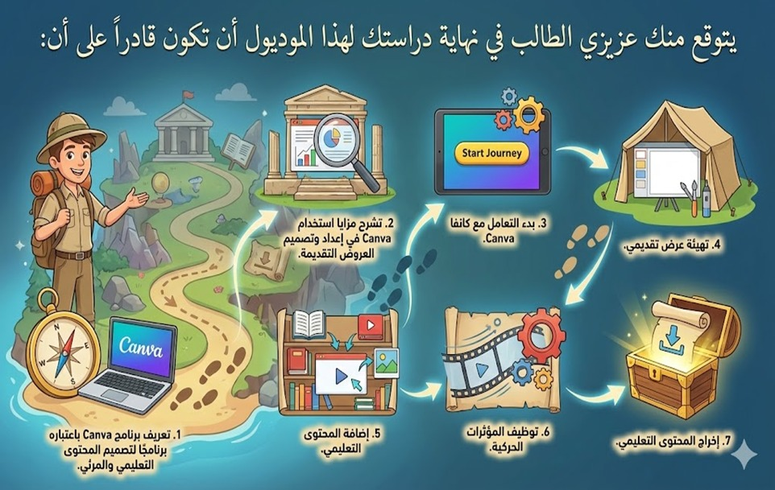المهمة الأدائية القبلية
⛔ تعليمات أداء المهمة القبلية:
عزيزي المتعلم... قبل البدء في دراسة هذا الموديول، يُطلب منك تنفيذ المهمة المطلوبة اعتمادًا على خبراتك السابقة ومعارفك الحالية دون الرجوع إلى محتوى الموديول، وذلك بهدف التعرف على مستوى أدائك الحالي قبل الدراسة، يرجى مراعاة التعليمات الآتية:
- تنفيذ المهمة بصورة فردية.
- الاعتماد على مهاراتك الحالية دون الاستعانة بشرح الموديول.
- الالتزام بمتطلبات الأداء المحددة في نص المهمة.
- استيفاء جميع عناصر الأداء قبل التسليم.
- رفع ناتج الأداء في المكان المخصص داخل البيئة التعليمية.
تعليمات الاختبار القبلي
🎯 هدف الاختبار:
هذا الاختبار وضع لقياس مدى تحصيلك في الجوانب المعرفية المرتبطة بمهارات تصميم المحتوى التعليمي تطبيقًا على برنامج كانفا Canva.
📝 تعليمات الاختبار:
من فضلك عزيزي الطالب اقرأ التعليمات التالية بعناية والاسترشاد بها قبل أن تبدأ في إجابة الاختبار:
- يتكون هذا الاختبار من جزئين، يشتمل الجزء الأول على عبارات من نوع الصواب والخطأ، ويشتمل الجزء الثانى على بنود من نوع الاختيار من متعدد.
- عند الإجابة عن أسئلة الصواب والخطأ سوف تجد أسفل كل سؤال علامتان، إحداهما صواب والأخرى خطأ، وعليك أن تضغط على العلامة الصحيحة باستخدام مؤشر الفأرة، والنقر على السؤال التالي.
- عند الإجابة عن بنود الاختيار من متعدد عليك أن تضغط على الإجابة التي تراها صحيحة؛ من بين البدائل الأربعة المتاحة بمؤشر الفأرة.
- إذا حصلت في نهاية الاختبار على 90% فأكثر؛ فلست في حاجة لدراسة هذا الموديول، وإذا حصلت على أقل من 90%؛ فابدأ مباشرة في دراسة الموديول التعليمي.
الاختبار التحصيلي القبلي
المحتوى التعليمي
عزيزي الطالب... يشمل محتوى الموديول على المعارف والمهارات الخاصة بتصميم المحتوى التعليمي تطبيقًا على برنامج كانفا Canva، ويمكن عرض تلك العناصر كالتالي:
❖ التعريف ببرنامج كانفا Canva:

أصبح توظيف الوسائط المرئية في التعليم ضرورة تفرضها طبيعة التعلم المعاصر في ظل تنوع مصادر المعرفة وتغير خصائص المتعلم واحتياجاته، كما لم تعد فاعلية المحتوى التعليمي مرتبطة بمضمونه فقط، بل باتت تعتمد إلى حد كبير على طريقة تصميمه، فطريقة تصميم المحتوى لها دور كبير في تسهيل الفهم، وتنظيم الأفكار، ومساعدة المتعلم على التركيز والمتابعة، وعندما يُقدَّم المحتوى بشكل واضح وجذاب، يصبح التعلم أكثر سلاسة وأقرب للفهم والتطبيق، ومن هنا تبرز أهمية تعلم مهارات تصميم المحتوى التعليمي باستخدام أدوات بسيطة تساعد المعلم على تحويل المعلومات إلى مواد تعليمية منظمة وواضحة.
ويعد كانفا Canva من برامج التصميم المستحدثة القائمة على الويب وتطبيقات الأجهزة الذكية التي تتيح إنشاء العروض التقديمية للمحتوى التعليمي، حيث يوفر مجموعة متنوعة من القوالب الجاهزة التي تساعد على تصميم شرائح العرض بصورة منظمة وجذابة، مع أدوات واضحة للتحكم في النصوص والألوان والصور، ويعتمد البرنامج على دمج العناصر المرئية مع المحتوى النصي بشكل متناسق، مما يسهم في تقديم المعلومات بصورة مختصرة وواضحة ويساعد على إيصال الفكرة الأساسية بسرعة دون الاعتماد على الشرح المطول.
ويعتمد كانفا Canva على مكتبة واسعة من القوالب الجاهزة والعناصر الجرافيكية، مع واجهة استخدام بسيطة تعتمد على السحب والإفلات، بما يمكن غير المتخصصين في التصميم من إنتاج عروض تقديمة ذات جودة عالية، مع إتاحة حفظ التصميمات وتعديلها ومشاركتها، مما يجعله مناسبًا لتوظيفه في إعداد العروض التقديمية والمحتوى التعليمي داخل البيئات التعليمية المختلفة.
المحتوى التعليمي
❖ مزايا استخدام Canva في إعداد وتصميم العروض التقديمة:
يتسم برنامج كانفا Canva بعدد من المميزات التي جعلته من الأدوات الفاعلة في تصميم العروض التقديمية، تتمثل فيما يلي:
- بساطة واجهة الاستخدام: تعد سهولة واجهة الاستخدام من العوامل الرئيسة المميزة لبرنامج Canva في إعداد العروض التقديمية، حيث يعتمد على واجهة تقوم على مبدأ السحب والإفلات، مما يتيح للمعلمين والطلاب – حتى غير المتخصصين في مجال التصميم – إعداد عروض تقديمية ذات جودة عالية دون الحاجة إلى خبرات متقدمة.
- الدعم الكامل للغة العربية: يقدم البرنامج دعمًا شاملًا للغة العربية من حيث الواجهة واتجاه الكتابة والخطوط، مما يسهل التنقل والاستخدام بشكل طبيعي وسلس دون أي مشاكل تقنية، بالإضافة إلى ذلك، هناك قوالب مصممة خصيصاً للمحتوى العربي تراعي الخصوصية الثقافية العربية.
- توافر القوالب الجاهزة: يوفر برنامج Canva مجموعة متنوعة من القوالب الجاهزة للعروض التقديمية، تتميز بحسن توزيع العناصر وتناسقها داخل الشرائح، ويساعد هذا المستخدم على اختيار عرض يتوافق مع طبيعة المحتوى التعليمي، كما يسهم في تنظيم الأفكار وتسلسلها بطريقة واضحة.
- تعدد صيغ الحفظ والتصدير: يوفر كانفا Canva مرونة استثنائية في طريقة عرض وتصدير العروض التقديمية، حيث يمكن تقديم العرض مباشرة باستخدام أدوات تحكم احترافية، مع إمكانية استخدام وضع المقدم الذي يعرض الملاحظات والشريحة التالية، كما تصدير العروض بصيغ متعددة (PPTX - PDF - JPG - PNG - MP4 - GIF) وجميع هذه الصيغ تحافظ على جودة عالية للصور والعناصر.
- ثراء الموارد البصرية: يتميز برنامج Canva بتعدد وتنوع العناصر البصرية، من صور وأيقونات وأشكال وخطوط التي يمكن تخصيصها بسهولة، ويساعد هذا التنوع تحويل الأفكار والمفاهيم المجردة إلى تمثيلات بصرية واضحة داخل شرائح العرض.
- سهولة الوصول والمشاركة: يتيح Canva مشاركة العروض التقديمية مع الآخرين وإمكانية التعديل المشترك عليها، وهو ما يعزز فاعلية استخدام العروض التقديمية كأداة تعليمية نشطة، وتُعد هذه الميزة ذات أهمية تربوية، حيث تسهم في تشجيع الطلاب على العمل الجماعي.
- الإتاحة المجانية: توفر كانفا Canva نسخة Canva for Education مجانية بالكامل للمعلمين والطلاب، وتوفر هذه النسخة جميع ميزات النسخة الاحترافية (Pro) مجاناً، دون أي تكاليف إضافية بما يضمن العدالة في الوصول لجميع المؤسسات التعليمية بغض النظر عن ميزانياتها.
تقويم ذاتي (1)
المحتوى التعليمي

المحتوى التعليمي
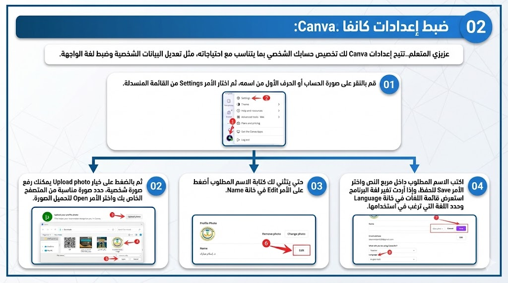تقويم ذاتي (2)
المحتوى التعليمي
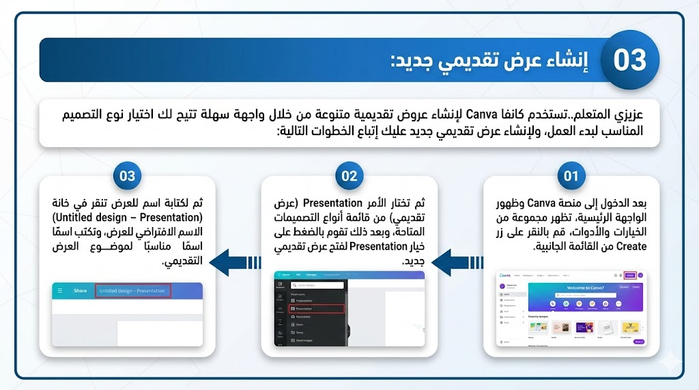المحتوى التعليمي
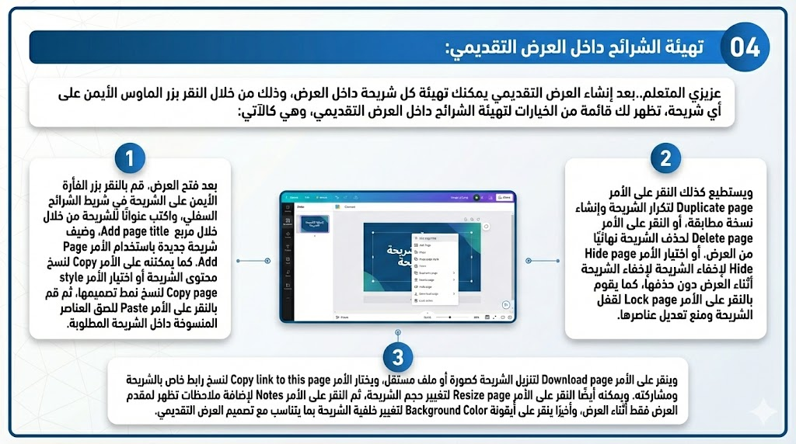المحتوى التعليمي
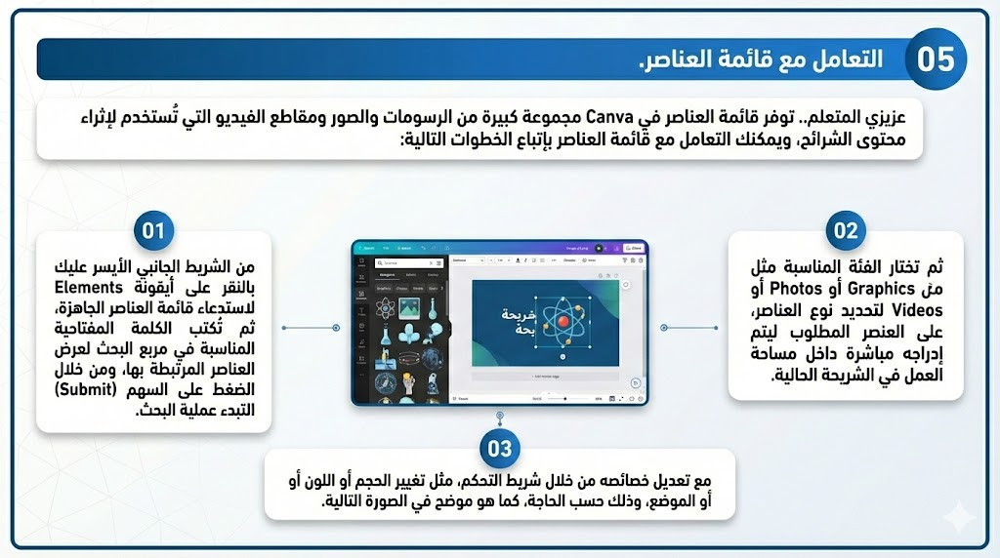المحتوى التعليمي
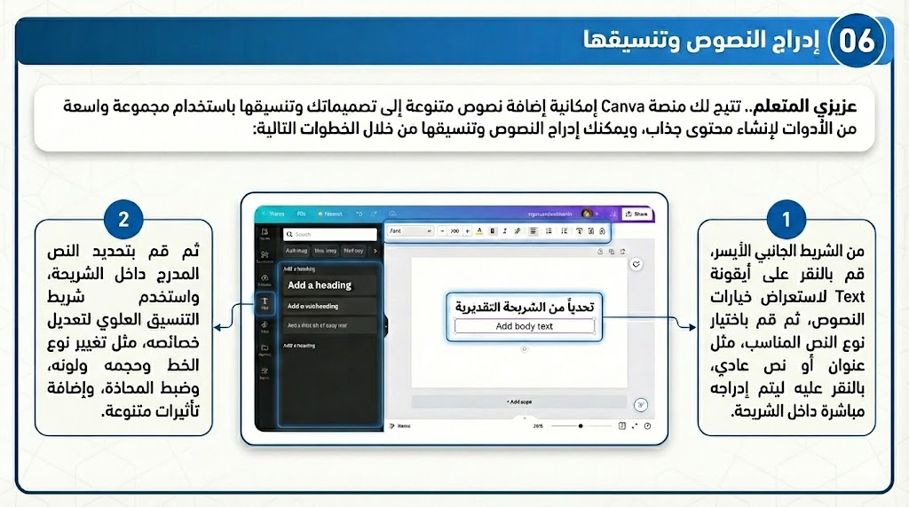تقويم ذاتي (3)
المحتوى التعليمي
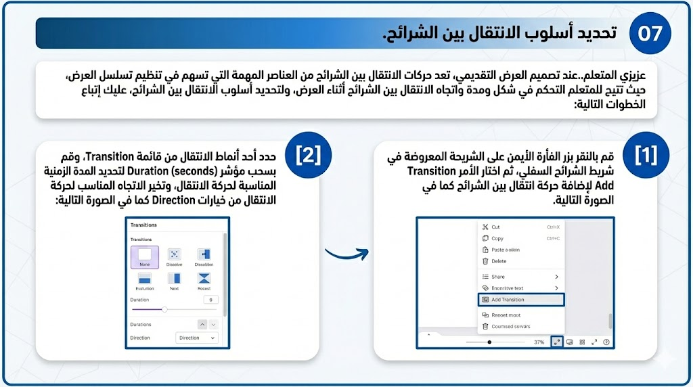المحتوى التعليمي
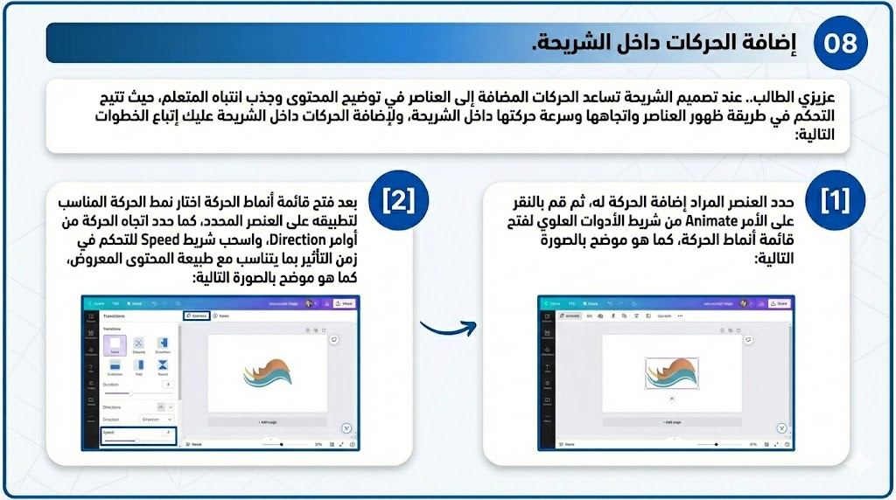المحتوى التعليمي
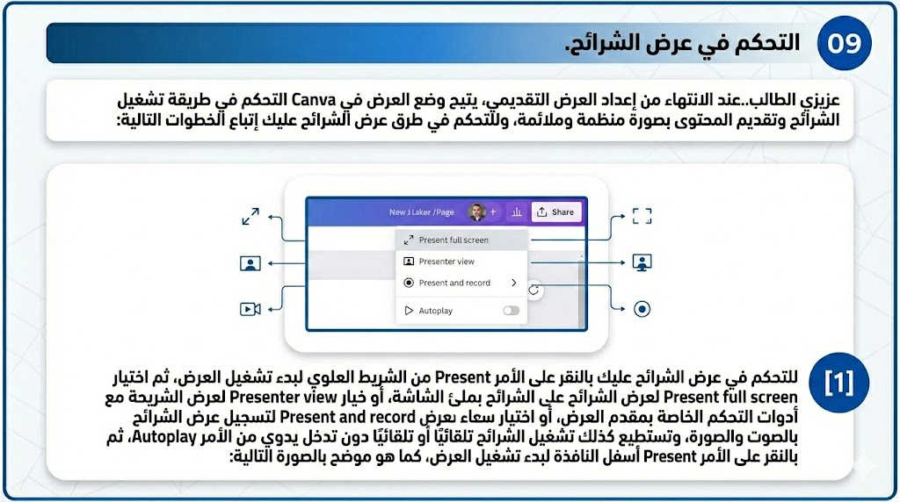المحتوى التعليمي
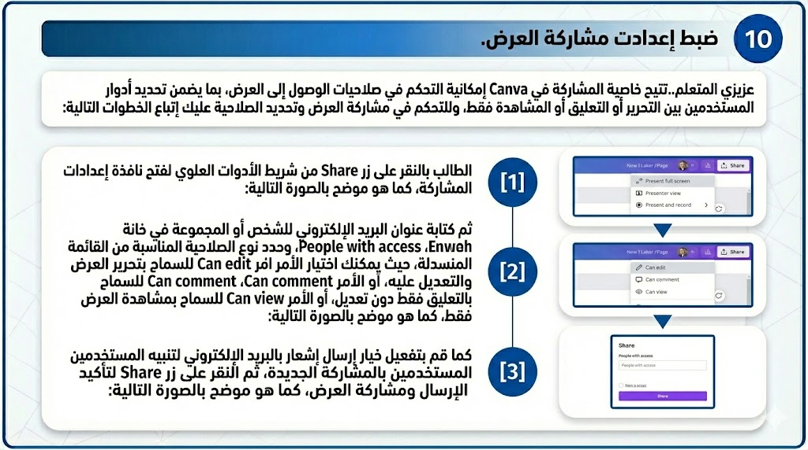المحتوى التعليمي
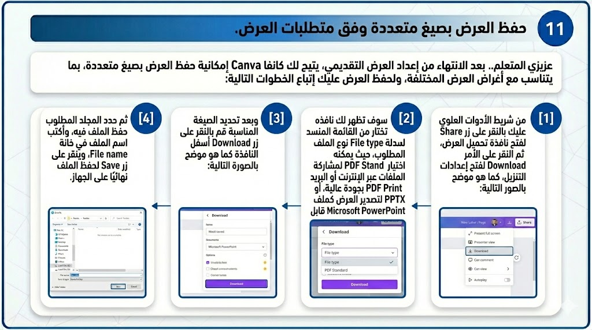تقويم ذاتي (4)
النشاط التدريبي
عزيزي المتعلم.. تفاعل مع النظام الذكي من خلال اختيار الكلمات المفتاحية الفعلية لتصميم عرض تعليمي، ثم في ضوء تلك الاستجابات المعروضة قم بتنفيذ المهمة الآتية:
🎯 المطلوب:
أنشئ عرضًا مرتبطًا بتخصصك يتضمن خمس شرائح منظمة وعناصر مرئية ونصوصًا منسقة وانتقالات، ثم شارك رابطه مع معلمك.
المهمة الأدائية البعدية
⛔ تعليمات أداء المهمة البعدية:
عزيزي المتعلم...بعد الانتهاء من دراسة هذا الموديول، يُطلب منك تنفيذ المهمة الآتية في ضوء ما اكتسبته من معارف ومهارات، وذلك بهدف قياس مستوى تطور أدائك بعد الدراسة، يرجى مراعاة التعليمات الآتية:
- تنفيذ المهمة بصورة فردية.
- توظيف المهارات المكتسبة بصورة متكاملة أثناء التنفيذ.
- الالتزام بمتطلبات الأداء المحددة في نص المهمة.
- استيفاء جميع عناصر الأداء قبل التسليم.
- رفع ناتج الأداء النهائي في المكان المخصص داخل البيئة التعليمية.
تعليمات الاختبار البعدي
🎯 هدف الاختبار:
هذا الاختبار وضع لقياس مدى تحصيلك في الجوانب المعرفية المرتبطة بمهارات تصميم المحتوى التعليمي تطبيقًا على برنامج كانفا Canva.
📝 تعليمات الاختبار:
من فضلك عزيزي الطالب اقرأ التعليمات التالية بعناية والاسترشاد بها قبل أن تبدأ في إجابة الاختبار:
- يتكون هذا الاختبار من جزئين، يشتمل الجزء الأول على عبارات من نوع الصواب والخطأ، ويشتمل الجزء الثانى على بنود من نوع الاختيار من متعدد.
- عند الإجابة عن أسئلة الصواب والخطأ سوف تجد أسفل كل سؤال علامتان، إحداهما صواب والأخرى خطأ، وعليك أن تضغط على العلامة الصحيحة باستخدام مؤشر الفأرة، والنقر على السؤال التالي.
- عند الإجابة عن بنود الاختيار من متعدد عليك أن تضغط على الإجابة التي تراها صحيحة؛ من بين البدائل الأربعة المتاحة بمؤشر الفأرة.
- إذا حصلت في نهاية الاختبار على 90% فأكثر؛ فلست في حاجة لدراسة هذا الموديول، وإذا حصلت على أقل من 90%؛ فابدأ مباشرة في دراسة الموديول التعليمي.